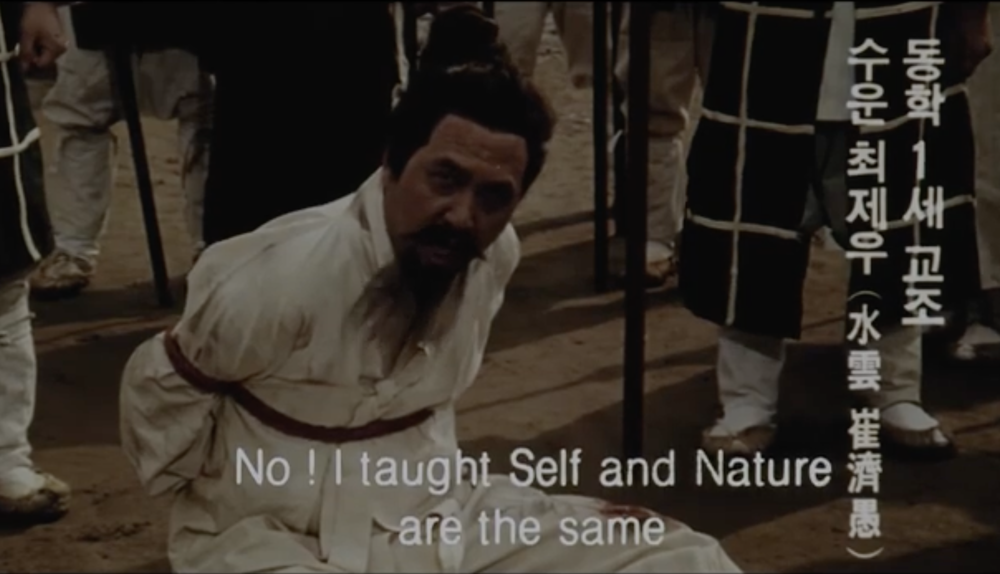
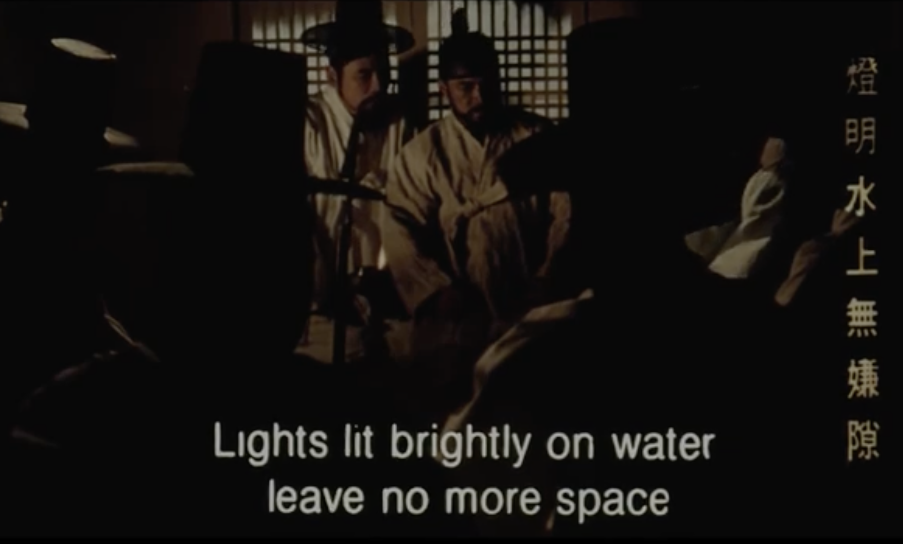
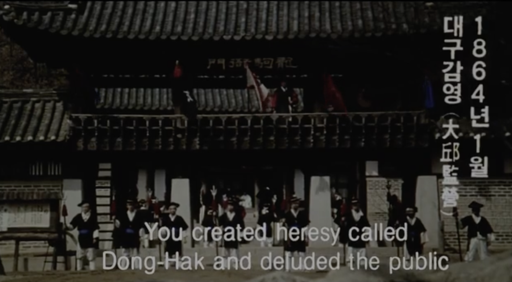
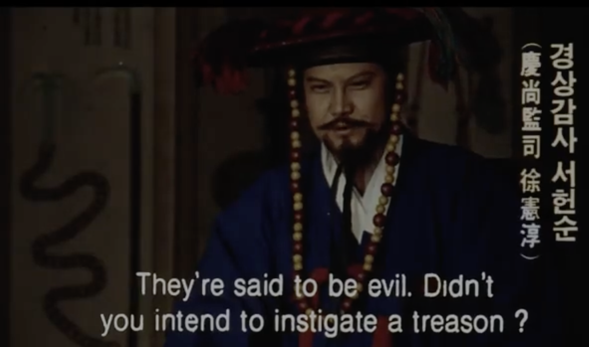
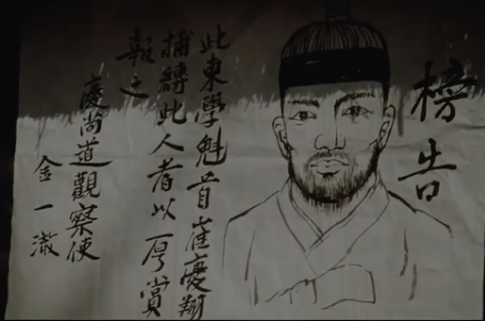

Scene 1
동학 1세 교조 · 수운 최제우 (水雲 崔濟愚)
Ch'oe Che-u Defends His Teaching
"No! I taught Self and Nature are the same."
The founder of Donghak, Suun Ch'oe Che-u, under interrogation. His core revelation (1860): humans and heaven are not separate. The concept of sich'onju (侍天主, "serving the Lord of Heaven") meant that the divine dwells within every person. The state heard this as sedition: if heaven is in the peasant, the yangban order has no divine mandate.
●

Scene 2
燈明水上無嫌隙
Lanterns on Water: A Philosophical Exchange
"Lights lit brightly on water / leave no more space."
A scene of classical literary culture. The vertical text on the right (燈明水上無嫌隙) is classical Chinese poetry. Im Kwon-taek regularly grounds the Donghak narrative in the Confucian intellectual world it emerged from. These scholars inhabit a world of literary refinement that Donghak threatened to democratize: Ch'oe Che-u taught that any person, not just the literate elite, could access the Way.
●

Scene 3
1864년 1월 · 대구감영 (大邱監營)
Trial at the Taegu Provincial Office
"You created heresy called Dong-Hak and deluded the public."
January 1864. Ch'oe Che-u is brought to the Taegu Provincial Office (감영) for trial. The charge: creating a heterodox teaching (이단) and misleading the people. The film captures the architectural grandeur of the provincial yamen, officials assembled on the upper gallery, soldiers below. The formal charge uses the language of Confucian orthodoxy: "heresy" (사학, literally "wrong learning"), the same term used against Catholicism decades earlier.
●

Scene 4
경상감사 서헌순 (慶尙監司 徐憲淳)
The Governor's Accusation
"They're said to be evil. Didn't you intend to instigate a treason?"
Kyongsang Provincial Governor So Hon-sun presides over the interrogation. Note the costuming: full official regalia with the amber court beads marking his rank. The question cuts to the core of the state's fear. Donghak was not just religiously heterodox; the government suspected it was a vehicle for political rebellion. In a neo-Confucian state, religious dissent and treason were the same category of threat.
●

Scene 5
1864년 3월 10일 · 수운 최제우 처형
Execution of the Founder
"He should have kept his head with magic!"
March 10, 1864. Ch'oe Che-u is publicly executed in Taegu. The crowd's taunt is telling: they mock him for failing to use the supernatural powers the government accused him of possessing. Im films the crowd from behind, white-clad commoners walking toward the execution ground. The state's logic: destroy the leader, destroy the movement. It was spectacularly wrong. Ch'oe Che-u's martyrdom became the movement's most powerful recruiting tool.
●

Scene 6
방고 (榜告) · 경상도관찰사
Wanted: The Donghak Ringleader
A government wanted poster (방고, 榜告) issued by the Kyongsang Provincial Governor. The text reads: "The ringleader of this Donghak group ... whoever captures and binds this person shall receive a generous reward." Signed by Provincial Governor Kim Il-jae (金一載). The hand-drawn portrait and brush calligraphy are period-accurate. After Ch'oe Che-u's execution, the government launched a decades-long manhunt for the remaining Donghak leadership, driving the movement underground.